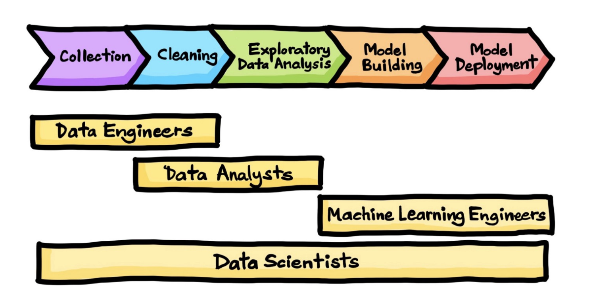

Data Engineering
3316512 Pharmaceutical AI
Natapol Pornputtapong, PhD
Chulalongkorn University
11 Mar 2026
Data Engineering
- data: scraping, API, feature engineering, all part of EDA
- compute: python, R, julia
- storage/database: pandas, SQL, NoSQL, HBase, disk, memory
- flow: Pandas, Apache Airflow, Prefect, Luigi
Data sciences workflow

1Downloading: file format
- Excel
- JSON
- table: CSV, TSV
- XML: HTML
JSON
CSV
TSV
API (Application Programming Interface)
- REST
- GraphQL
Web scraping
copyrights and permission:
- be careful and polite
- give credit
- care about media law
- don’t be evil (no spam, overloading sites, etc.)
HTML
Tags are in angle brackets should be in pairs, eg <p>Hello</p> maybe in implicit tags, such as <br/>
Developer Tools
ctrl/cmd shift- i in chrome cmd-option-i in safari look for “inspect element” locate details of tags
BeautifulSoup
Relational Database
- Tables, Rows, and Columns
- Keys
- Primary Key (PK)
- Foreign Key (FK)
- Structured Query Language (SQL)
- ACID Properties
ACID
- Atomicity - each statement in a transaction Either the entire statement is executed, or none of it is executed
- Consistency - ensures that transactions only make changes to tables in predefined, predictable ways.
- Isolation - when multiple users are reading and writing from the same table all at once, isolation of their transactions ensures that the concurrent transactions don’t interfere with or affect one another
- Durability - ensures that changes to your data made by successfully executed transactions will be saved, even in the event of system failure.
NoSQL features, strengths and challenges
Motivations for Not Just/No SQL (NoSQL) Databases
Scalability: ability to efficiently meet the needs for varying workloads
Cost: opensource
Flexibility: do not require a fixed table structure
Availability: distributed
NoSQL comparison
| Document | Column Store | Key-Value Store | Graph | |
|---|---|---|---|---|
| Performance | High | High | High | Moderate |
| Availability | High | High | High | High |
| Flexibility | High | Moderate | High | High |
| Scalability | High | High | High | Moderate |
| Complexity | Low | Low | Moderate | High |
Data Wrangling Steps
- Iterative process
- Understand
- Explore
- Transform
- Augment
- Visualize
Scales of Measurement1
- Quantitative (Interval and Ratio)
- Ordinal
- Nominal
The basic Exploratory Data Analysis (EDA) workflow
- Import data into a DataFrame
- Tidy the DataFrame
- Each row describes a single object
- Each column describes a property of that object
- Columns are numeric whenever appropriate
- Columns contain atomic properties that cannot be further decomposed
- Data Cleansing: Missing values, Format, Measurement Units, Outliers, Data Errors Per Domain
- Explore global properties. Use histograms, scatter plots, and aggregation functions to summarize the data.
- Explore group properties. Use groupby, queries, and small multiples to compare subsets of the data.
Grammar of Data
- SQL, Pandas, formalized in dplyr4
- provide simple verbs for simple things. These are functions corresponding to common data manipulation tasks.
- second idea is that backend does not matter, multiple backends implemented in Pandas, Spark, Impala, Pig, dplyr, ibis, blaze
Grammar of Data
Why bother? - learn how to do core data manipulations, no matter what the system is. - databases critical for non-memory fits.
Grammar of Data: cleaning and transforma1on
| VERB | dplyr | pandas | SQL |
|---|---|---|---|
| QUERY/SELECTION | filter() (and slice()) | query() (and loc[], iloc[]) | SELECT WHERE |
| SORT | arrange() | sort() | ORDER BY |
| SELECT-COLUMNS/PROJECTION | select() (and rename()) | (and rename()) | SELECT COLUMN |
| SELECT-DISTINCT | distinct() | unique(),drop_duplicates() | SELECT DISTINCT COLUMN |
| ASSIGN | mutate() (and transmute()) | assign | ALTER/UPDATE |
| AGGREGATE | summarise() | describe(), mean(), max() | None, AVG(),MAX() |
| SAMPLE | sample_n() and sample_frac() | sample() | implementation dep, use RAND() |
| GROUP-AGG | group_by/summarize | groupby/agg, count, mean | GROUP BY |
| DELETE | ? | drop/masking | DELETE/WHERE |
Data processing
- OLTP: Online Transaction Processing
- OLAP: Online Analytic Processing
- RTAP: Real-Time Analytic Processing